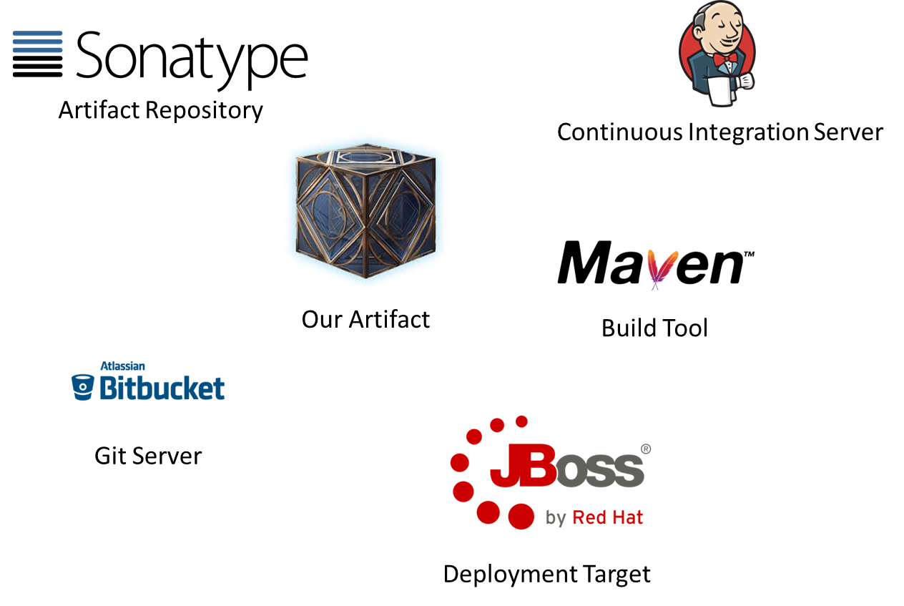
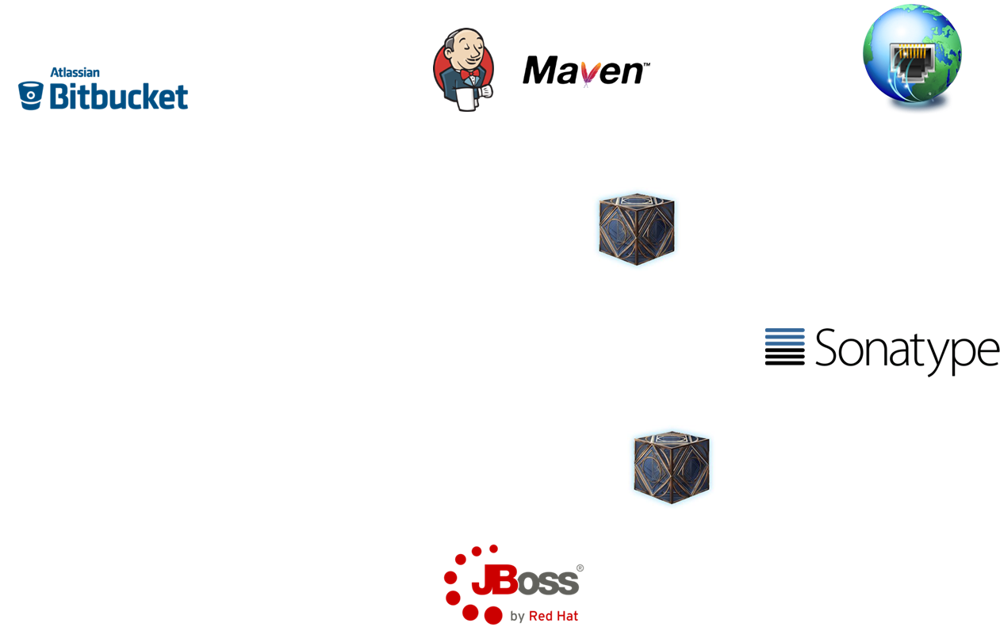
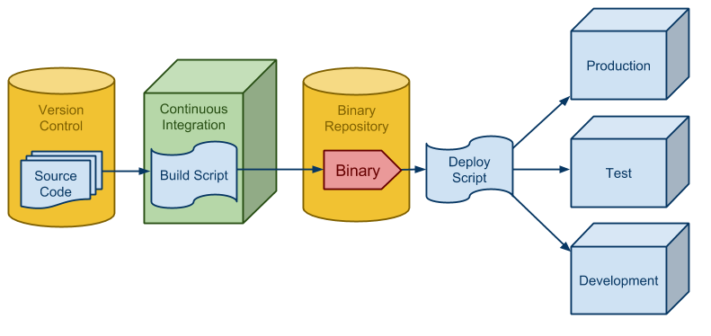

About us


About Baloise
...
Our tools in Java
Our workflow for Java artifacts
Versioning and SNAPSHOTS

Our approach in Java
- not exactly semantic versioning ;-)
- SNAPSHOTS!
- not tagged
- not stable
- not reproducible
- easy for development
- built and published after every push on ci
Different versioning concepts in JavaScript
- alpha / beta prereleases
- semver as best practice
- prereleases are tagged and reproducible
- prereleases with npm-dist-tag next
- releases with npm-dist-tag latest
- only build and published locally and manually
Our solution
some picks from two worlds
- build and release happens on ci
- prereleases built and published on push
- semver to communicate changes on release
- immutable artifacts
- developer uses ci job to release major / minor / patch
CI live demo - Fallback


Tagging
Know the source of your artifact

Our approach in Java
- git tag on every release by ci
Tagging in most JavaScript projects
- done manually and locally by a developer
Our solution
- git tag on every release by ci
Release and publish
Our approach in Java
- Release happens on ci
- build and publish to artifact repository
- artifact tagged in git -> immutable
Releasing in most JavaScript projects
- done manually and locally by a developer
- npm-dist-tag: -> latest
- published on npmjs.org
Our solution
- git tag on every release by ci
- npm-dist-tag: -> latest
- ci publishes to artifact repository
Self contained builds
CI job configuration in GIT, no buildtools installed on ci
pipeline {
agent { docker 'maven:3-alpine' }
stages {
stage('Example Build') {
steps {
sh 'mvn -B clean verify'
}
}
}
}
Our approach in Java
- build jobs defined in project groovy files, under version control
- maven installed on CI (currently)
- alternative: usage of gradle wrapper
- maven or gradle as dependency manager
Most javascript projects
- define which Node.js version you need
- container with installed version provided on ci
- use package.json to define dependencies
a big corporate enterprise
security, corporate proxy and governance
- not able to download any executables
- or archives
- or NodeJS
- or npm packages
- ensure an immutable history of released artifacts
Artifact repository to the rescue!
- can download binaries and executables
- works perfectly as download manager ;-)
- has our own published packages
- works as proxy to the outside world -> npmjs.org
Our solution
No NodeJS installed on CI server
- a project defines its required NodeJS version
- that exact NodeJS version will be downloaded via artifact repository and used on CI
- gradle or maven can be used to define and download
- npm packages are also downloaded via artifact repository
- package.json used to define all dependencies
Example using Frontend-Maven Plugin
<plugin>
<groupId>com.github.eirslett</groupId>
<artifactId>frontend-maven-plugin</artifactId>
<executions>
<execution>
<id>install node</id>
<goals>
<goal>install-node-and-npm</goal>
</goals>
<phase>generate-resources</phase>
</execution>
</executions>
<configuration>
<nodeVersion>v8.11.2</nodeVersion>
<nodeDownloadRoot>${nexusNodeJS}</nodeDownloadRoot>
</configuration>
</plugin>
Build once
Standardized process and tools
Corporate Standard api built on best practices - freedom to adjust
Our approach in Java
- corporate wide maven api and workflow on CI
- fully customizable for teams
node {
stage('git checkout') {
checkout scm
}
stage('standard') {
mavenbuild()
}
stage('custom') {
mavenbuild cmd: "clean install",
mavenArgs: "-DskipTest=true"
}
}
Our solution
- corporate wide npm
reproducible builds
without SNAPSHOT dependencies
the future
- security and license checks for npm packages -> IQ Server
- no maven installed on ci -> fetch temporary via artifact repository
- no need for maven or gradle to define and download nodejs version
- -> nodejs docker img?